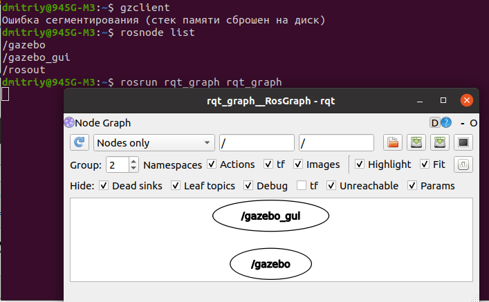

Запуск gazebo через другие программы
Запуск gazebo через xterm
Попытаюсь запустить gazebo через xterm, как запустил в Docker, раздел Урок 5.4 Создание контейнеров и управление ими с помощью Docker.
- xterm в хосте не был установлен, установил: sudo apt install xterm
- Команда: xterm
Открылось окно (терминал) xterm.
- export TURTLEBOT3_MODEL=burger
roslaunch turtlebot3_gazebo turtlebot3_world.launch

Никакой разницы с выполнением этих команд в терминале GNOME.
Xvfb — это X11 сервер, который выполняет все графические операции в памяти без вывода на экран.
Установка: sudo apt-get install xvfb
Запуск: xvfb-run -s "-screen 0 1400x900x24" bash
export TURTLEBOT3_MODEL=burger
roslaunch turtlebot3_gazebo turtlebot3_world.launch

В другом терминале:
gzclient
Ошибка сегментирования
rosnode list
rosrun rqt_graph rqt_graph

Я так и не понял, что запустил, какой-то gazebo поцоканный. В любом случае не подходит поскольку не видно мультиков.
Запуск gazebo через ros2 в xterm
Открыл контейнер на базе ros2
Выполнил команду xterm.
Получен ответ: Xt error: Can't open display: %s
xterm: DISPLAY is not set
Если выполнить команду: gazebo

ros2 launch turtlebot3_gazebo turtlebot3_world.launch.py

В общем нужно делать, как в Docker, раздел Урок 5.4 Создание контейнеров и управление ими с помощью Docker.
Что такое OpenGL, как обойти если видеокарта не поддерживает его
OpenGL (Open Graphics Library) — это спецификация, определяющая платформонезависимый (независимый от языка программирования) программный интерфейс для написания приложений, использующих двумерную и трёхмерную компьютерную графику.
OpenGL включает более 300 функций для рисования сложных трёхмерных сцен из простых примитивов.
Он используется при создании компьютерных игр, САПР, виртуальной реальности, визуализации в научных исследованиях. На платформе Windows конкурирует с Direct3D.
Моя версия на компьютере: